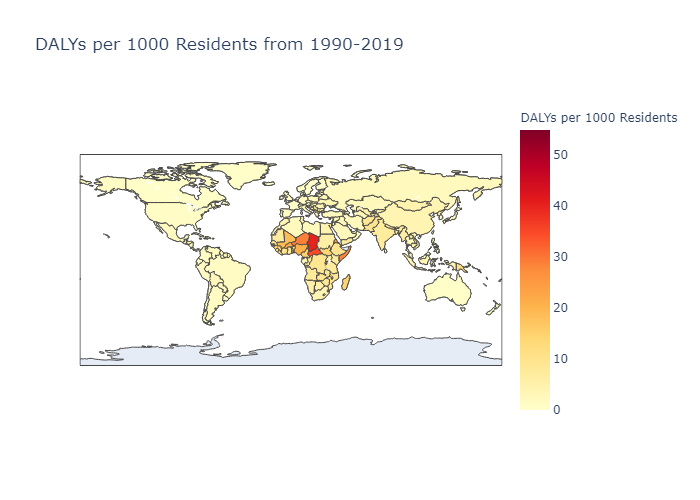

This project primarily uses the data supplied publicly by the Organization for Economic Co-Operation and Development (OECD). Other data used will be mentioned here as well.
To observe the effects greenhouse gasses have had on the planet, we first have to consider the amount of greenhouse gasses being emitted globally and the context surrounding these emissions. First, we plot the total greenhouse gas emissions over time:
Two key observations can be made looking at the above visualization: firstly, that China’s greenhouse gas emissions are hugely impactful towards the global total - and secondly, that the global (production of pollutants (excluding China) has ever-so-slightly decreased over the previous 28 years. However, it should be noted that China’s emissions seem to have only increased over the same timespan. Next, we plot greenhouse gasses on a political map to see which countries are the biggest producers of atmospheric pollutants:
This map illustrates the average greenhouse gas emissions produced by each country with available data, with more environmentally unfriendly countries labelled in increasingly vibrant red. The global “superpowers” - United States, China, Russia, India - all immediately jump off the screen as being the biggest producers of greenhouse gasses. However, which other countries rise to the top of the list?
As one can see, after the big four countries, the next four countries with the highest greenhouse gas emissions are Indonesia, Japan, Brazil, and Germany. Again, these countries are globally dominant in both the political and economic scenes. A quick look at the gross domestic products of each of these countries show that these heavy polluters also happen to be some of the world’s top economic powerhouses.
(maybe a visualization about ghg emissions per capita or per GDP or both)
Ultimately, it’s estimated that x% of the world’s greenhouse gasses come from the industrial sector (citation needed), and thus it makes sense that the countries that produce the most would also generate the most waste.
Climate change is not a new topic, and has been a focal point for global news outlets for decades. Whether it be the melting of the polar ice caps, lakes and rivers drying up, or the obliteration of entire ecosystems - it’s impossible to deny the devastating impact human pollution has had on the environment. Greenhouse gasses are just one factor (albeit a very significant one) in the overarching issue that is climate change. However, they are one of the most consistently recorded and reported metrics in the field, which makes them and their data some of the most suitable to construct a report with.
This is all to say: the purpose of this report is not to point fingers at the worst polluters or shame the individual reader into recycling more. Instead, we hope our audience is able to take a step back and view our planet’s climate crisis from a different lens - one focusing on the tremendous scale and human impact this problem presents. By changing one’s own perspective, the question transitions from: “what can I do?” to “what more can I learn?”
Due to the negative effects of carbon emissions on the Earth’s climate, many countries have put laws into place to limit their environmental impact.
Since these laws can vary significantly by country, both in intent and effect, the Organization for Economic Co-operation and Development (OECD), has come up with a index to compare each countries environmental policy stringency. OECD assess each participating country on a 0 (least stringent) to 6 (most stringent) scale for:
These six indexes are aggregated using a formula shown here for an overall index to compare environmental policy stringency between countries, which is done on the map below.
This map shows many of the countries with the highest environmental policy index are in Europe, with an index around 3. The only other country in range with Europe is Canada, at 3.35. The countries with the lowest index are Brazil and Russia, both around .5. It is unsurprising that the two largest emitters, the US and China, are not at the front of the pack when it comes to environmental policy. The US has an index of around 2.7 and China is around 1.1, which is in line with the trend of China’s emissions increasing while the US’s emissions decreasing slightly. This also indicates that environmental policy can be a successful strategy to mitigate carbon emissions. It should also be noted that data from Central and South America, Africa, and Central Asia is missing.
Direct environmental taxes are another method governments use to decrease carbon emissions, and they can be used to pay for environmental policies. The map below shows environmental taxes as a percent of GDP, in order to compare countries relative to the size of their economy, which also helps avoid outliers from large economies.
Here we find that most countries have small environmental tax rates, all below 6%. Europe leads the environmental tax rate as well, with most countries in the 2-3% range. Most countries outside of Europe are in the 1-2% range. Interesting outliers include Mauritania with an environmental tax rate above 5% of GDP, and Mexico with an environmental tax rate of -.2% of GDP. This data is hard to make conclusions about, other than the fact that environmental taxes are not widely used, which makes it difficult to judge their effectiveness. Despite environmental taxes being relatively untested, they logically motivate companies to decrease their environmental impact, and raises funds for government expenses.
For this section we will look at how environmental risks can affect health. Disability Affected Years (DALYs) is a way of measuring the burden of disease. It combines years of life lost and years of healthy life lost due to sickness or disability. Below is a map of the average DALYs per 1000 residents averaging from 1990-2019.
Below is a map that shows the DALYs per 1000 residents from 1990-2019. Note that some years do not have data and appear gray.
We can see that while the countries with the worst health tend to be in central Africa, we can also see that the number is decreasing as the years progress.
Then we want to see the trend for DALYs over time. Below shows the DALYs per 1000 resients for the top 10 countries in GHG emissions from 1990-2019.
We can see that there has been a steady decline in DALYs over the past 30 years across all 10 countries.
This is a rough outline of how we will be presenting our data. We have started with some ideas for visualizations. We hope to use those to make more animated designs, particularly for the maps. We are still in progress of working through those in vega-lite and then we will add those into our design.
We can start to see some connections through these different areas. Places with higher environmental tax rates tend to have lower GHG emissions, like Canada and Europe. While the data on DALYs showed data on where the world is sicker and healthier over the years, there was not a strong visible connection. It would be interesting to see data on specifically health related to pollution and be able to compare that to the levels of GHG.
Hope you enjoyed!